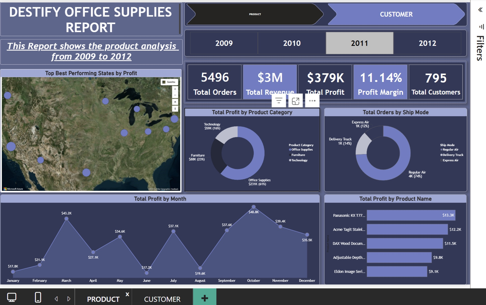

World Health Organization (WHO) HIV Treatment Analysis with DAX and PowerBI
Analyzed WHO HIV and Antiretroviral Therapy (ART) data from 2001–2024 to evaluate global treatment outcomes and access. The dashboard explores HIV mortality and survival trends over time, ART coverage across countries and continents, and the relationship between treatment access and health outcomes. It identifies regions with the highest HIV burden, highlights disparities in access to life-saving treatment, and demonstrates how increased ART coverage has contributed to improved survival rates. The project concludes with data-driven recommendations to support policymakers and healthcare stakeholders in improving global HIV treatment equity.
VIEW MY PROJECT

DESTIFY SALES ANALYSIS USING POWERBI, EXCEL, DAX
Business Problem: DeskTify Office Supplies needed a centralized reporting solution to better understand sales performance, profitability, customer behaviour, and product trends. The goal was to transform raw sales data into actionable insights that support strategic business decisions.
Methodology
Using Power Query, I cleaned and transformed the Excel dataset before developing an interactive two-page Power BI dashboard for Product and Customer Analysis. The dashboard incorporates KPI cards, interactive slicers, maps, charts, treemaps, and a decomposition tree to analyse sales, profitability, customer segments, regional performance, shipping methods, and product performance.
Key Insights & Outcome:
The dashboard identified the most profitable product categories, highest-value customers, best-performing regions, and loss-making products while revealing key sales and shipping trends. By converting complex data into a clear, interactive reporting solution, it empowered stakeholders to make faster, data-driven decisions that improve operational efficiency and profitability.
VIEW MY PROJECT

PURESIP SALES ANALYSIS USING EXCEL, POWERBI, DAX, POWER QUERY
Business Problem:
PURESIP beverage company needed an interactive solution to monitor sales performance across time, regions, products, retail stores, and sales representatives. The aim was to identify high and low-performing areas and evaluate whether sales targets were being achieved to support performance improvement and strategic decision-making.
Methodology:
Built an interactive Power BI dashboard using a structured and scalable dataset organised for future expansion. Key KPIs including total sales, profit, and quantity sold were calculated alongside time-series analysis of sales trends. Sales representative performance was assessed using KPI targets to compare actual performance against expected benchmarks. The dashboard also analysed regional sales distribution, brand and product performance, retail store contributions, and customer purchasing behaviour.
Key Insights & Outcome:
The analysis revealed top-performing regions, best-selling products, and leading brands, while also identifying underperforming stores and products. Sales representative analysis highlighted individuals who exceeded targets and those requiring improvement, enabling performance tracking against clear benchmarks. The final dashboard delivered a scalable, interactive solution that supports continuous performance monitoring and helps stakeholders make informed, data-driven decisions to improve sales efficiency and growth.
VIEW MY PROJECTS

Lumina Healthcare Operations SQL Analysis
Business Problem: A healthcare organization needed clearer visibility into clinical, operational, and financial patterns across patient, provider, prescription, and appointment data to support compliance, pharmacy planning, population health, quality assurance, and executive decision-making.
Methodology: Wrote 10 SQL queries across a relational healthcare database, using joins, date arithmetic, CASE logic, aggregations, HAVING clauses, and string matching to answer specific business questions, with documented schema and query logic for reproducibility.
Business Outcome: Delivered actionable insights including a compliance audit trail, a shortlist of high-demand medications for procurement, a defined patient cohort for a wellness pilot, a diagnosis-to-treatment audit set, and a specialty-level leakage analysis revealing that nearly a third of appointments across every specialty are lost to cancellations or no-shows.
VIEW MY PROJECTS
Skin Cancer Risk Intelligence & Patient Diagnosis Optimization using SQL, Powerpoint (for presentation)
Business Problem: Derma Life Oncology Research Institute (DORI) has experienced a significant rise in late-stage skin cancer diagnoses, high-risk lesion progression, and recurring patient complications, particularly among elderly and underserved populations. Healthcare administrators also suspect that environmental conditions, hereditary history, smoking, alcohol consumption, and poor sanitation access are major contributors to the increasing skin cancer risk.
Methodology: Using SQL, I analyzed patient and lesion-level data across four areas: demographic risk, lesion characteristics, environmental factors, and lifestyle behavior. Queries used aggregation, CASE-based grouping, joins across patient and lesion tables, and window functions to calculate diagnosis counts, distributions, and percentage breakdowns by age, gender, body region, sanitation access, and smoking/drinking habits.
Business Outcome: DThe analysis showed skin cancer history is concentrated in older adults and roughly balanced by gender, with the back and face regions showing the highest malignant and biopsied case counts. ACK was the most common diagnosis overall, while MEL (melanoma) had the largest average lesion diameter, indicating higher severity despite lower frequency. Lifestyle analysis found only 28 patients both smoke and drink, but this group showed a higher malignant case rate (8 of 28, ~29%) than the rest of the population (114 of 1,060, ~11%), suggesting combined smoking and drinking may compound skin cancer risk.
VIEW MY PROJECTS


{kind=link}